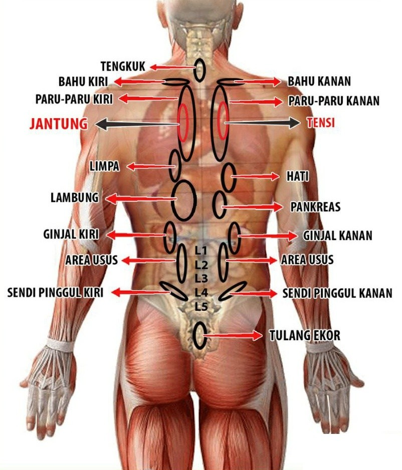

Badan terasa sakit? Rasakan lega lewat terapi totok punggung
Totok punggung adalah terapi tradisional yang menekan titik-titik di sepanjang punggung untuk membantu tubuh rileks. Kami menghubungkan Anda dengan terapis di Medan yang sudah melalui proses verifikasi.

Yang Anda dapatkan
Terapis terverifikasi
Setiap mitra melewati pemeriksaan biodata, pengalaman, dan wawancara sebelum tampil di jaringan.
Sesi sesuai wilayah
Pilih terapis di Medan Kota, Johor, Sunggal, atau Marelan, lalu hubungi langsung lewat WhatsApp.
Rempah pendamping
Minyak hangat, wedang rempah, dan kompres untuk melanjutkan perawatan di rumah.
Belajar dan bergabung
Ikuti pelatihan kami, lalu daftar menjadi mitra terapis.
Cerita pelanggan
Contoh testimoni, ganti dengan ulasan asli pelanggan Anda.
Setelah sesi, bahu dan punggung saya terasa jauh lebih ringan. Terapisnya ramah dan datang tepat waktu.
Rina, Medan KotaSaya sering duduk berjam-jam di kantor. Sesi seminggu sekali sangat membantu saya rileks.
Dimas, Medan JohorMudah memilih terapis karena status verifikasinya jelas. Saya jadi lebih tenang.
Maya, Medan SunggalCara memesan sesi
- Buka halaman Mitra Terapis dan pilih wilayah Anda.
- Lihat profil dan status verifikasi terapis.
- Tekan tombol WhatsApp dan sepakati jadwal.
Ingin menjadi mitra?
Daftarkan diri Anda, isi biodata dan pengalaman, lalu tim kami akan meninjau pendaftaran Anda.
Lihat pelatihanTentang totok punggung
Penjelasan singkat dan jujur tentang terapi ini, sebelum Anda mencobanya.
Apa itu totok punggung?
Totok punggung adalah terapi tradisional yang dilakukan dengan menekan titik-titik tertentu di sepanjang punggung, biasanya memakai ujung jari atau alat totok, sering dipadukan dengan minyak rempah hangat.
Satu sesi umumnya berlangsung 45–60 menit dengan tekanan yang disesuaikan dengan kenyamanan Anda.
Tujuan dan manfaat yang diharapkan
- Membantu otot punggung dan bahu terasa lebih rileks.
- Meredakan rasa pegal setelah duduk atau bekerja lama.
- Membantu tubuh terasa hangat dan lebih nyaman.
- Memberi waktu istirahat dan relaksasi yang berkualitas.
Totok punggung adalah perawatan pendukung dan tidak menggantikan pemeriksaan atau pengobatan medis.
Siapa yang dapat menerima terapi?
Umumnya cocok untuk
- Dewasa sehat dengan pegal otot atau kaku akibat aktivitas.
- Pekerja kantor, pengemudi, dan ibu rumah tangga yang sering lelah.
- Orang yang ingin relaksasi setelah aktivitas padat.
Konsultasikan ke dokter dulu bila
- Sedang hamil.
- Memiliki osteoporosis, patah tulang, atau cedera tulang belakang.
- Ada luka, ruam, atau infeksi kulit di punggung.
- Sedang demam, atau memakai obat pengencer darah.
- Memiliki tekanan darah tinggi yang belum terkontrol.
Pertanyaan yang sering ditanyakan
Jaringan terapis Medan
Temukan terapis di wilayah Anda atau daftar sebagai calon mitra.
Data di bawah adalah contoh. Ganti dengan terapis asli Anda setelah proses verifikasi berjalan.
Untuk mendaftar menjadi mitra, silakan masuk atau buat akun dulu. Melihat terapis, menghubungi terapis, dan membeli produk tidak perlu akun.
Formulir biodata dan pengalaman
Produk rempah
Rempah pilihan untuk melanjutkan perawatan di rumah. Harga di bawah adalah contoh.
Akademi dan pelatihan
Belajar teknik totok punggung yang aman, dari dasar sampai siap menjadi mitra.
Artikel dan edukasi
Bacaan singkat seputar punggung sehat, rempah, dan keamanan terapi.
Hubungi kami
Tanyakan jadwal, produk, atau pelatihan. Pesan Anda dikirim lewat WhatsApp.
Informasi
Wilayah layanan
Medan Kota, Medan Johor, Medan Sunggal, Medan Marelan
Jam layanan
Setiap hari, 08.00–20.00 WIB
WhatsApp admin
Nomor dan jam adalah contoh, ubah sesuai bisnis Anda.
Siap merasa lebih ringan?
Pilih terapis di wilayah Anda atau tanyakan dulu lewat WhatsApp.